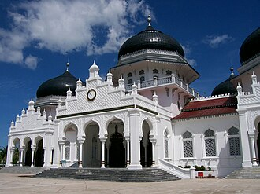

소개
La Grande Mosquée Baiturrahman, en indonésien Mesjid Raya Baiturrahman, en aceh Meuseujid Raya Baiturrahman, est une mosquée d'Indonésie située dans le centre de la ville de Banda Aceh, dans la province d'Aceh. Elle a une grande importance pour le peuple Aceh en tant que symbole de la religion musulmane et de la culture acehnaise, particulièrement depuis le tsunami de 2004 d'où la mosquée est sortie intacte.
مسجد بيت الرحمن الكبير هو مسجد يقع في وسط مدينة باندا آتشيه في إقليم آتشيه بإندونيسيا، مسجد بيت الرحمن الكبير هو رمز ديني وثقافي وروحي وهو أيضا رمز للقوة والنضال والقومية لشعب أتشيه، وقد نجا هذا المسجد من زلزال تسونامي المدمر في عام 2004.
Baiturrahman Grand Mosque is a mosque located in Banda Aceh, Aceh, Indonesia. The Baiturrahman Grand Mosque is a symbol of religion, culture, spirit, strength, struggle, and nationalism of the Acehnese people. The mosque is a landmark in Banda Aceh and has survived the 2004 Indian Ocean earthquake and tsunami.
Masjid Raya Baiturrahman Banda Aceh atau yang lebih dikenal dengan Masjid Raya Baiturrahman atau Masjid Kesultanan Aceh adalah sebuah masjid bersejarah yang berada di Kota Banda Aceh, Provinsi Aceh, Indonesia. Masjid ini dibangun pada tahun 1879 dan merupakan simbol agama, budaya, semangat, kekuatan, perjuangan dan nasionalisme rakyat Aceh. Kemudian masjid ini adalah landmark Kota Banda Aceh sejak era Kesultanan Aceh dan Aceh saat ini. Masjid ini juga dikenal karena menjadi salah satu bangunan yang selamat dari gempa bumi dan tsunami tahun 2004.
مسجد بیتُ الرحمٰن الکبیر (انڈونیشی: Masjid Raya Baiturrahman) انڈونیشیا کے صوبہ آچے کے دار الحکومت باندا آچے کے وسط میں واقع ایک مشہور مسجد ہے۔ یہ مسجد آچے کے عوام کے لیے مذہبی، ثقافتی اور روحانی علامت کے ساتھ ساتھ قوت، جدوجہد اور قومی شناخت کی بھی علامت سمجھی جاتی ہے۔ 2004ء میں آنے والے تباہ کن زلزلہ اور سونامی کے باوجود یہ مسجد محفوظ رہی، جس کے باعث اس کی اہمیت مزید بڑھ گئی۔
Die Große Moschee Baiturrahman ist eine Moschee, die sich im Zentrum von Banda Aceh, der Hauptstadt der indonesischen Provinz Aceh, befindet. Sie hat für die einheimische achinesische Bevölkerung eine große symbolische Bedeutung für deren Religion und Kultur, insbesondere nachdem das Gebäude den Tsunami von 2004 verhältnismäßig folgenlos überstanden hat.
La Gran Mezquita Baiturrahman es una mezquita localizada en el centro de la ciudad de Banda Aceh, Provincia de Aceh, Indonesia. Es de gran significado simbólico, religioso y cultural para los achinenses, especialmente desde que sobrevivió intacta al devastador tsunami y terremoto de 2004.
De Grote moskee van Baiturrahman staat in de Indonesische stad Banda Atjeh (Sumatra).
Мечеть Байтуррахман Рая — большая мечеть, расположенная в центре города Банда-Ачех, в провинции Ачех, Индонезия. Мечеть имеет большое символическое значение для жителей провинции как символ религии и культуры, тем более, что она пережила неповреждённой разрушительное цунами 2004 года.
มัสยิดใหญ่แห่งบัยตุรเราะฮ์มาน เป็นมัสยิดที่ตั้งอยู่ในภาคกลางของเมืองบันดาอาเจะฮ์ จังหวัดอาเจะฮ์ ประเทศอินโดนีเซีย มันเป็นแลนด์มาร์กของเมืองและรอดพ้นจากการทำลายล้างในเหตุการณ์แผ่นดินไหวและคลื่นสึนามิในมหาสมุทรอินเดีย พ.ศ. 2547
지도에서
자료와 링크
- Wikipédia — Français
- Wikipédia — العربية
- Wikipédia — English
- Wikipédia — Bahasa Indonesia
- Wikipédia — اردو
- Wikipédia — Deutsch
- Wikipédia — Español
- Wikipédia — Nederlands
- Wikipédia — 中文
- Wikipédia — Русский
- Wikipédia — ไทย
- Wikidata — Q1548318
데이터: 위키데이터(CC0), 3개월마다 갱신. 연도는 그 건물에 대해 알려진 가장 이른 건립 연대입니다. 나중에 모스크가 된 건물(아야 소피아 등)의 경우 원래 건물의 연대입니다. 사진: 위키미디어 공용, 작가와 라이선스는 각 사진의 페이지에 있습니다.